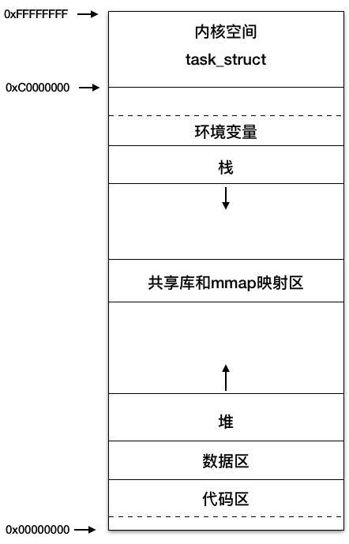
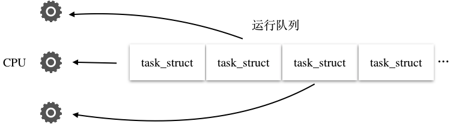
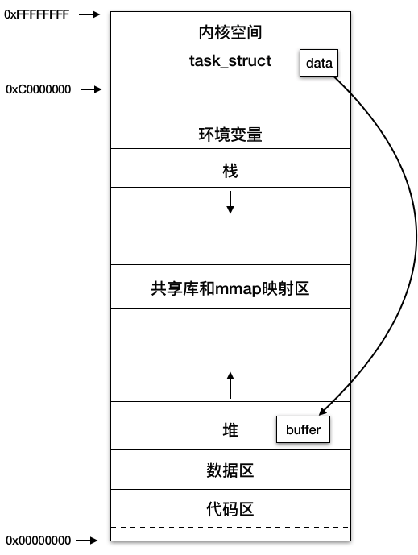

- 00 开篇词 Java程序员如何快速成长？.md
- 01 Web容器学习路径.md
- 02 HTTP协议必知必会.md
- 03 你应该知道的Servlet规范和Servlet容器.md
- 04 实战：纯手工打造和运行一个Servlet.md
- 05 Tomcat系统架构（上）： 连接器是如何设计的？.md
- 06 Tomcat系统架构（下）：聊聊多层容器的设计.md
- 07 Tomcat如何实现一键式启停？.md
- 08 Tomcat的“高层们”都负责做什么？.md
- 09 比较：Jetty架构特点之Connector组件.md
- 10 比较：Jetty架构特点之Handler组件.md
- 11 总结：从Tomcat和Jetty中提炼组件化设计规范.md
- 12 实战：优化并提高Tomcat启动速度.md
- 13 热点问题答疑（1）：如何学习源码？.md
- 14 NioEndpoint组件：Tomcat如何实现非阻塞I_O？.md
- 15 Nio2Endpoint组件：Tomcat如何实现异步I_O？.md
- 16 AprEndpoint组件：Tomcat APR提高I_O性能的秘密.md
- 17 Executor组件：Tomcat如何扩展Java线程池？.md
- 18 新特性：Tomcat如何支持WebSocket？.md
- 19 比较：Jetty的线程策略EatWhatYouKill.md
- 20 总结：Tomcat和Jetty中的对象池技术.md
- 21 总结：Tomcat和Jetty的高性能、高并发之道.md
- 22 热点问题答疑（2）：内核如何阻塞与唤醒进程？.md
- 23 Host容器：Tomcat如何实现热部署和热加载？.md
- 24 Context容器（上）：Tomcat如何打破双亲委托机制？.md
- 25 Context容器（中）：Tomcat如何隔离Web应用？.md
- 26 Context容器（下）：Tomcat如何实现Servlet规范？.md
- 27 新特性：Tomcat如何支持异步Servlet？.md
- 28 新特性：Spring Boot如何使用内嵌式的Tomcat和Jetty？.md
- 29 比较：Jetty如何实现具有上下文信息的责任链？.md
- 30 热点问题答疑（3）：Spring框架中的设计模式.md
- 31 Logger组件：Tomcat的日志框架及实战.md
- 32 Manager组件：Tomcat的Session管理机制解析.md
- 33 Cluster组件：Tomcat的集群通信原理.md
- 34 JVM GC原理及调优的基本思路.md
- 35 如何监控Tomcat的性能？.md
- 36 Tomcat I_O和线程池的并发调优.md
- 37 Tomcat内存溢出的原因分析及调优.md
- 38 Tomcat拒绝连接原因分析及网络优化.md
- 39 Tomcat进程占用CPU过高怎么办？.md
- 40 谈谈Jetty性能调优的思路.md
- 41 热点问题答疑（4）： Tomcat和Jetty有哪些不同？.md
- 特别放送 如何持续保持对学习的兴趣？.md
- 结束语 静下心来，品味经典.md
22 热点问题答疑（2）：内核如何阻塞与唤醒进程？
在专栏的第三个模块，我们学习了Tomcat连接器组件的设计，其中最重要的是各种I/O模型及其实现。而I/O模型跟操作系统密切相关，要彻底理解这些原理，我们首先需要弄清楚什么是进程和线程，什么是虚拟内存和物理内存，什么是用户空间和内核空间，线程的阻塞到底意味着什么，内核又是如何唤醒用户线程的等等这些问题。可以说掌握这些底层的知识，对于你学习Tomcat和Jetty的原理，乃至其他各种后端架构都至关重要，这些知识可以说是后端开发的“基石”。
在专栏的留言中我也发现很多同学反馈对这些底层的概念很模糊，那今天作为模块的答疑篇，我就来跟你聊聊这些问题。
进程和线程
我们先从Linux的进程谈起，操作系统要运行一个可执行程序，首先要将程序文件加载到内存，然后CPU去读取和执行程序指令，而一个进程就是“一次程序的运行过程”，内核会给每一个进程创建一个名为task_struct的数据结构，而内核也是一段程序，系统启动时就被加载到内存中了。
进程在运行过程中要访问内存，而物理内存是有限的，比如16GB，那怎么把有限的内存分给不同的进程使用呢？跟CPU的分时共享一样，内存也是共享的，Linux给每个进程虚拟出一块很大的地址空间，比如32位机器上进程的虚拟内存地址空间是4GB，从0x00000000到0xFFFFFFFF。但这4GB并不是真实的物理内存，而是进程访问到了某个虚拟地址，如果这个地址还没有对应的物理内存页，就会产生缺页中断，分配物理内存，MMU（内存管理单元）会将虚拟地址与物理内存页的映射关系保存在页表中，再次访问这个虚拟地址，就能找到相应的物理内存页。每个进程的这4GB虚拟地址空间分布如下图所示：

进程的虚拟地址空间总体分为用户空间和内核空间，低地址上的3GB属于用户空间，高地址的1GB是内核空间，这是基于安全上的考虑，用户程序只能访问用户空间，内核程序可以访问整个进程空间，并且只有内核可以直接访问各种硬件资源，比如磁盘和网卡。那用户程序需要访问这些硬件资源该怎么办呢？答案是通过系统调用，系统调用可以理解为内核实现的函数，比如应用程序要通过网卡接收数据，会调用Socket的read函数：
ssize_t read(int fd,void *buf,size_t nbyte)
CPU在执行系统调用的过程中会从用户态切换到内核态，CPU在用户态下执行用户程序，使用的是用户空间的栈，访问用户空间的内存；当CPU切换到内核态后，执行内核代码，使用的是内核空间上的栈。
从上面这张图我们看到，用户空间从低到高依次是代码区、数据区、堆、共享库与mmap内存映射区、栈、环境变量。其中堆向高地址增长，栈向低地址增长。
请注意用户空间上还有一个共享库和mmap映射区，Linux提供了内存映射函数mmap， 它可将文件内容映射到这个内存区域，用户通过读写这段内存，从而实现对文件的读取和修改，无需通过read/write系统调用来读写文件，省去了用户空间和内核空间之间的数据拷贝，Java的MappedByteBuffer就是通过它来实现的；用户程序用到的系统共享库也是通过mmap映射到了这个区域。
我在开始提到的task_struct结构体本身是分配在内核空间，它的vm_struct成员变量保存了各内存区域的起始和终止地址，此外task_struct中还保存了进程的其他信息，比如进程号、打开的文件、创建的Socket以及CPU运行上下文等。
在Linux中，线程是一个轻量级的进程，轻量级说的是线程只是一个CPU调度单元，因此线程有自己的task_struct结构体和运行栈区，但是线程的其他资源都是跟父进程共用的，比如虚拟地址空间、打开的文件和Socket等。
阻塞与唤醒
我们知道当用户线程发起一个阻塞式的read调用，数据未就绪时，线程就会阻塞，那阻塞具体是如何实现的呢？
Linux内核将线程当作一个进程进行CPU调度，内核维护了一个可运行的进程队列，所有处于TASK_RUNNING状态的进程都会被放入运行队列中，本质是用双向链表将task_struct链接起来，排队使用CPU时间片，时间片用完重新调度CPU。所谓调度就是在可运行进程列表中选择一个进程，再从CPU列表中选择一个可用的CPU，将进程的上下文恢复到这个CPU的寄存器中，然后执行进程上下文指定的下一条指令。

而阻塞的本质就是将进程的task_struct移出运行队列，添加到等待队列，并且将进程的状态的置为TASK_UNINTERRUPTIBLE或者TASK_INTERRUPTIBLE，重新触发一次CPU调度让出CPU。
那线程怎么唤醒呢？线程在加入到等待队列的同时向内核注册了一个回调函数，告诉内核我在等待这个Socket上的数据，如果数据到了就唤醒我。这样当网卡接收到数据时，产生硬件中断，内核再通过调用回调函数唤醒进程。唤醒的过程就是将进程的task_struct从等待队列移到运行队列，并且将task_struct的状态置为TASK_RUNNING，这样进程就有机会重新获得CPU时间片。
这个过程中，内核还会将数据从内核空间拷贝到用户空间的堆上。

当read系统调用返回时，CPU又从内核态切换到用户态，继续执行read调用的下一行代码，并且能从用户空间上的Buffer读到数据了。
小结
今天我们谈到了一次Socket read系统调用的过程：首先CPU在用户态执行应用程序的代码，访问进程虚拟地址空间的用户空间；read系统调用时CPU从用户态切换到内核态，执行内核代码，内核检测到Socket上的数据未就绪时，将进程的task_struct结构体从运行队列中移到等待队列，并触发一次CPU调度，这时进程会让出CPU；当网卡数据到达时，内核将数据从内核空间拷贝到用户空间的Buffer，接着将进程的task_struct结构体重新移到运行队列，这样进程就有机会重新获得CPU时间片，系统调用返回，CPU又从内核态切换到用户态，访问用户空间的数据。
不知道今天的内容你消化得如何？如果还有疑问，请大胆的在留言区提问，与我和其他同学一起讨论。如果你觉得今天有所收获，欢迎你把它分享给你的朋友。
© 2019 - 2023 Liangliang Lee. Powered by gin and hexo-theme-book.